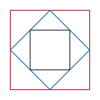

別冊練習問題 8 の解答 中点を結ぶ正方形の面積の総和
(1) 1辺 \(6\) の正方形がある。各辺の中点を結んで正方形を作り、さらにその正方形の各辺の中点を結ぶ操作を限りなくくり返す。できる正方形（もとのものを含む）の面積の総和を求めよ。
面積の列
各辺の中点を結んで作る正方形の面積は、元の \(\dfrac12\) 倍。
\[S_1=36,\quad S_2=18,\quad S_3=9,\ \ldots\]
初項と公比
初項 \(36\)、公比 \(\dfrac12\)。
総和
\[\dfrac{36}{1-\dfrac12}=72\]
【答案】
\[72\]答
(2) 1辺 \(8\) の正方形がある。各辺の中点を結んで正方形を作り、さらにその正方形の各辺の中点を結ぶ操作を限りなくくり返す。できる正方形（もとのものを含む）の面積の総和を求めよ。
面積の列
各辺の中点を結んで作る正方形の面積は、元の \(\dfrac12\) 倍。
\[S_1=64,\quad S_2=32,\quad S_3=16,\ \ldots\]初項と公比
初項 \(64\)、公比 \(\dfrac12\)。
総和
\[\dfrac{64}{1-\dfrac12}=128\]
【答案】
\[128\]答
(3) 1辺 \(10\) の正方形がある。各辺の中点を結んで正方形を作り、さらにその正方形の各辺の中点を結ぶ操作を限りなくくり返す。できる正方形（もとのものを含む）の面積の総和を求めよ。
面積の列
各辺の中点を結んで作る正方形の面積は、元の \(\dfrac12\) 倍。
\[S_1=100,\quad S_2=50,\quad S_3=25,\ \ldots\]初項と公比
初項 \(100\)、公比 \(\dfrac12\)。
総和
\[\dfrac{100}{1-\dfrac12}=200\]
【答案】
\[200\]答